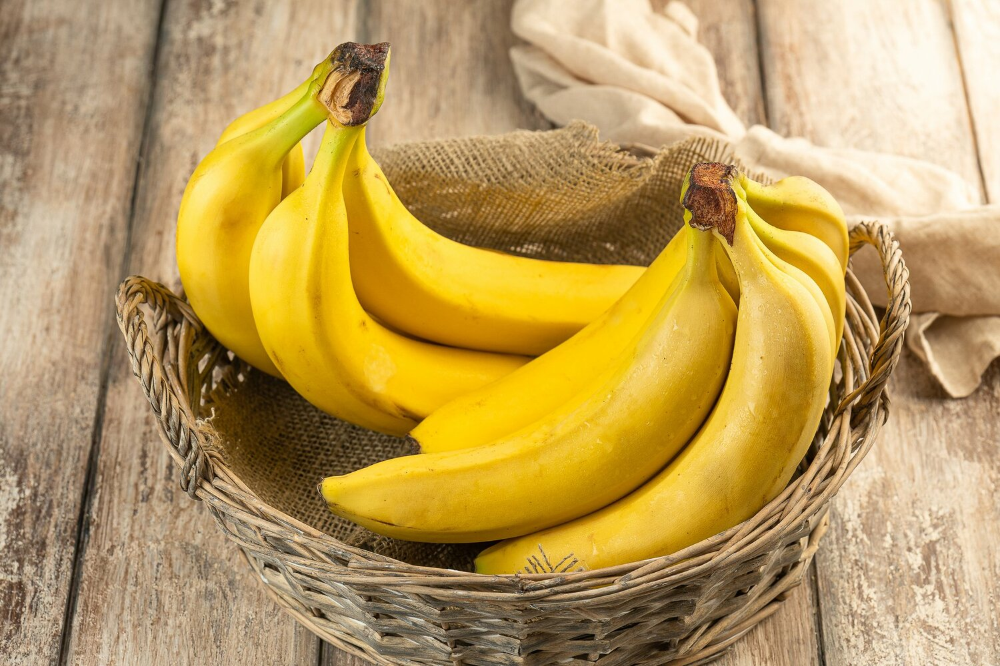
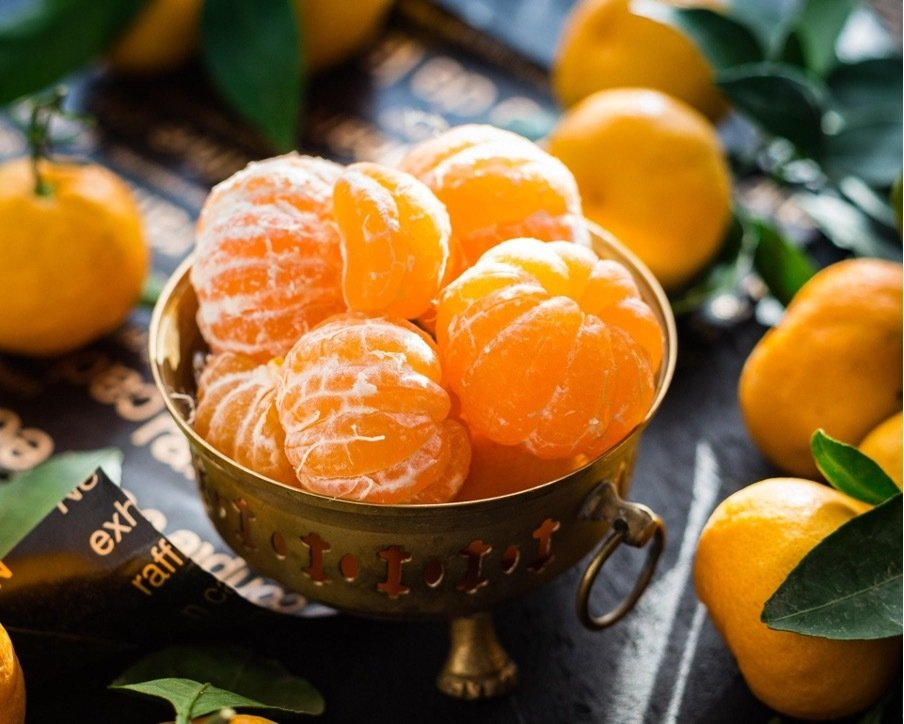

Фруктовый сад
Всё о вкусном только здесь
Лимон

Лимон – фрукт-универсал. Некоторые повара признаются, что если бы им поставили условие выбрать единственный плод для своей кухни, то лимон они бы взяли без колебаний. Ведь он ароматен, полезен, ярок по вкусу и красив. В лимоне все прекрасно: и мякоть, и кожура, и сок, и даже листья. Напитки, десерты, соусы, всевозможные блюда разных национальных кухонь – лимон способен на многое.
Яблоко

Яблоки, как и груши, принадлежат к семейству семечковых. Они созревают ближе к концу лета, а урожай собирается до поздней осени. Яблоки считаются самым потребляемым фруктом в мире. Разные сорта отличаются между собой по цвету, форме, вкусу и времени созревания.
Банан
Банан — род многолетних травянистых растений семейства Банановые (Musaceae), наибольшее видовое разнообразие которых наблюдается в тропиках Юго-Восточной Азии и, в частности, на Малайском архипелаге.
Мандарин
Мандарины – сладкие и сочные цитрусовые – представлены разными сортами, которые различаются по размеру, сладости и количеству косточек. Обычно все мандарины объединяет одна ценная характеристика: их душистую оранжевую кожуру достаточно легко чистить